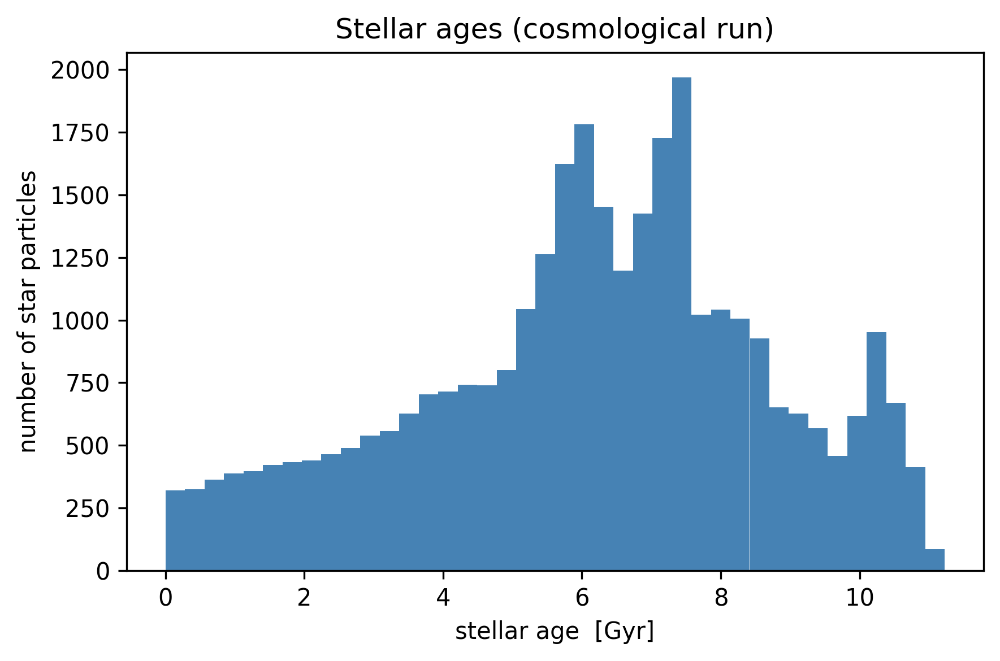
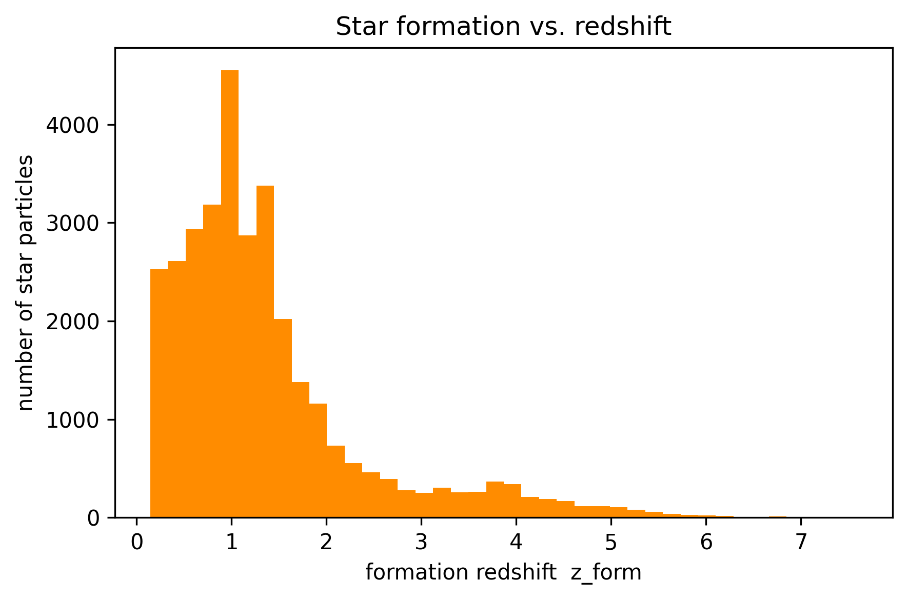
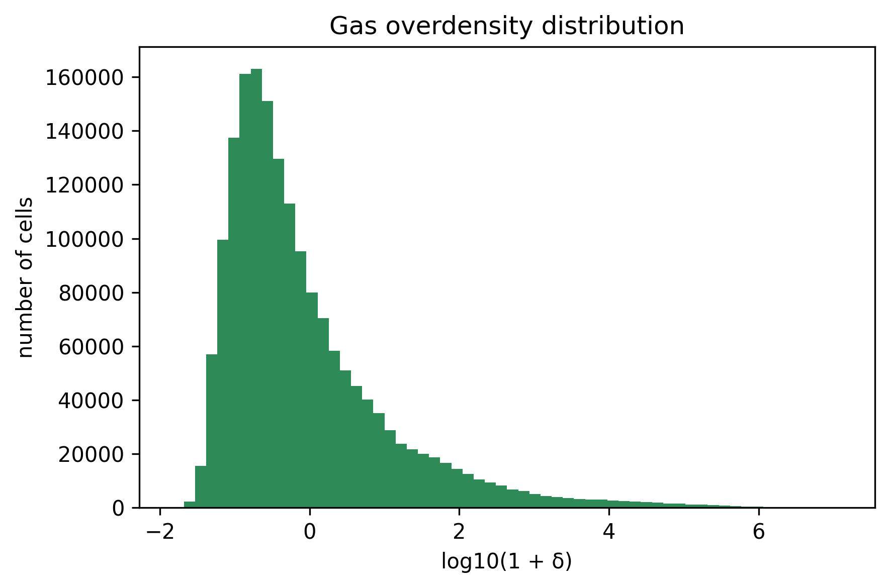

9. Cosmological Simulations
This page is also an executable Jupyter notebook: open / download 09_multi_Cosmology.ipynb. The notebooks run end-to-end and double as part of Mera's test suite.
RAMSES writes the same info-file fields for every run, so Mera reads them for both idealised and cosmological simulations. A non-cosmological run carries sentinel values (aexp = 1, H0 = 1, omega_m = 1, omega_l = 0); a cosmological run carries physical values (e.g. aexp = 0.875, H0 = 70.3, omega_m = 0.276, omega_l = 0.724).
This tutorial shows the cosmology-aware tools Mera builds on top of that:
- detect a cosmological run and get its redshift / full cosmological state
gettimereturning the age of the universe (cosmologicalinfo.timeis conformal time, not proper time)- stellar ages, formation redshift and formation time from the particle birth times (RAMSES stores these as conformal time)
- the gas overdensity field
- comoving ↔ proper conversions
All of these are derived from fields that have always existed on InfoType, so they also work on MERA files of any age (see Backward compatibility below).
Test simulation and reference
The example below uses the public yt project sample output output_00080 a cosmological zoom simulation (gas, dark matter and stars), provided by the yt project (Turk et al. 2011, yt: A Multi-code Analysis Toolkit for Astrophysical Simulation Data, ApJS 192, 9). It is not redistributed with Mera; download it once with:
mkdir -p yt_cosmo && cd yt_cosmo
curl -OL https://yt-project.org/data/output_00080.tar.gz
tar xzf output_00080.tar.gzSnapshot properties: z ≈ 0.143 (aexp ≈ 0.875), H0 = 70.3, Ωm = 0.276, ΩΛ = 0.724, flat (Ωk = 0).
Reading a cosmological run
getinfo automatically detects a cosmological run and prints a dedicated cosmology block (redshift, scale factor, density parameters, age, lookback and Hubble time). The reported simulation time is the age of the universe at the snapshot, not the raw conformal info.time.
# Example-data root. Point this at your own simulation folder, or set the
# MERA_EXAMPLES environment variable; every path below is built from it.
MERA_EXAMPLES = get(ENV, "MERA_EXAMPLES", "/Volumes/FASTStorage/Simulations/Mera-Tests");
using Mera
info = getinfo(80, "$MERA_EXAMPLES/RAMSES/yt_cosmo");*__ __ _______ ______ _______
| |_| | | _ | | _ |
| | ___| | || | |_| |
| | |___| |_||_| |
| | ___| __ | |
| ||_|| | |___| | | | _ |
|_| |_|_______|___| |_|__| |__|
Mera v1.8.0 | Julia 1.12.7 | 8 threads
[Mera]: 2026-09-10T10:08:43.319
Code: RAMSES
output [80] summary:
mtime: 2012-08-13T16:51:06
ctime: 2026-06-01T07:42:48.561
=======================================================
simulation time: 11.925 [Gyr] (age of universe)
boxlen: 62.14 [Mpc]
ncpu: 16
ndim: 3
-------------------------------------------------------
cosmological: true
redshift z: 0.1426 (aexp = 0.8752)
H0: 70.30 km/s/Mpc Ωm: 0.276 ΩΛ: 0.724 Ωk: 0.000 Ωb: 0.045
age: 11.925 Gyr lookback: 1.798 Gyr Hubble time: 13.909 Gyr
-------------------------------------------------------
amr: true
level(s): 6 - 16 --> cellsize(s): 970.86 [kpc] - 948.11 [pc]
-------------------------------------------------------
hydro: true
hydro-variables: 6 --> (:rho, :vx, :vy, :vz, :p, :var6)
γ: 1.4
-------------------------------------------------------
gravity: true
gravity-variables: (:epot, :ax, :ay, :az)
-------------------------------------------------------
particles: true (no particle header file)
particle-variables: 5 --> (:vx, :vy, :vz, :mass, :birth)
-------------------------------------------------------
rt: false
clumps: false
namelist-file: false
boundaries: unknown (no namelist; not recorded in info_*.txt)
timer-file: false
compilation-file: false
makefile: false
patchfile: false
=======================================================Detecting a cosmological run
iscosmological returns true/false; redshift returns z = 1/aexp − 1 (0 for a non-cosmological run).
iscosmological(info), redshift(info)(true, 0.14255728632206321)Full cosmological state: cosmology
cosmology(info) returns a NamedTuple with the complete state of the snapshot redshift, scale factor, the density parameters, and derived quantities: Hubble time, age of the universe, lookback time and the critical density ρ_crit = 3H(z)²/8πG. Everything is computed from the stored info fields.
c = cosmology(info)(iscosmological = true, redshift = 0.14255728632206321, aexp = 0.875229637910795, H0 = 70.3000030517578, omega_m = 0.276000022888184, omega_l = 0.723999977111816, omega_k = 0.0, omega_b = 0.0450000017881393, hubble_time_Gyr = 13.9088503437748, age_Gyr = 11.92526533595642, lookback_Gyr = 1.7984823184196177, rho_crit_cgs = 1.0542295486333991e-29)Cosmic time with gettime
In a cosmological run info.time is conformal time (negative), so the naive info.time × scale is meaningless. gettime therefore returns the age of the universe at the snapshot, in the requested unit.
gettime(info, :Gyr) # age of the universe at this snapshot [Gyr]11.92526533595642Mean and critical densities
mean_matter_density and mean_baryon_density give the mean (proper) densities at the snapshot redshift, ρ̄ = Ω · ρ_crit,0 · (1+z)³, the reference densities for overdensities. The critical density at the snapshot is c.rho_crit_cgs.
mean_matter_density(info), mean_baryon_density(info), c.rho_crit_cgs # [g/cm³](3.821451389512857e-30, 6.230626996398272e-31, 1.0542295486333991e-29)Stellar ages
RAMSES stores a star particle's birth time as conformal (super-conformal) time, the same variable as info.time. A physical age therefore is not (info.time − birth) × scale; it is the difference of proper cosmic times at the snapshot and at birth. Mera does this conversion via a Friedmann integration table (as in RAMSES' own friedman routine), so getvar(…, :age) returns the correct physical age on a cosmological run.
Star particles have birth < 0; non-star particles (dark matter) carry the sentinel birth = 0 and are reported with age 0, select stars with birth .< 0.
particles = getparticles(info);
birth = getvar(particles, :birth)
stars = birth .< 0.0
ages = getvar(particles, :age, :Gyr)
(n_stars = count(stars), age_min = minimum(ages[stars]), age_max = maximum(ages[stars]))[Mera]: Get particle data: 2026-09-10T10:08:47.944
Using threaded processing with 8 threads
Key vars=(:level, :x, :y, :z, :id)
Using var(s)=(1, 2, 3, 4, 5) = (:vx, :vy, :vz, :mass, :birth)
domain:
xmin::xmax: 0.0 :: 1.0 ==> 0.0 [Mpc] :: 62.135 [Mpc]
ymin::ymax: 0.0 :: 1.0 ==> 0.0 [Mpc] :: 62.135 [Mpc]
zmin::zmax: 0.0 :: 1.0 ==> 0.0 [Mpc] :: 62.135 [Mpc]
Processing 16 CPU files using 8 threads
Mode: Threaded processing
Combining results from 8 thread(s)...
Found 1.090895e+06 particles
Memory used for data table :74.9068775177002 MB
-------------------------------------------------------(n_stars = 31990, age_min = 5.0186259167604e-15, age_max = 11.225102965242586)using PyPlot
rc("figure", dpi=300); rc("savefig", dpi=300)
figure(figsize=(6,4))
hist(ages[stars], bins=40, color="steelblue")
xlabel("stellar age [Gyr]"); ylabel("number of star particles")
title("Stellar ages (cosmological run)"); tight_layout();
Formation redshift and formation time
:zform (alias :formation_redshift) gives the redshift at which each star formed, :formation_time the corresponding age of the universe. They satisfy formation_time + age = age of the universe at the snapshot.
Non-star particles (birth ≥ 0) return NaN for both :zform and :formation_time (the underlying formation_redshift / formation_time are undefined for the birth = 0 sentinel), so select stars with birth .< 0 or filter !isnan, not == 0. (Only :age returns 0 for non-stars.)
zform = getvar(particles, :zform)
ftime = getvar(particles, :formation_time, :Gyr)
(zform_max = maximum(zform[stars]), ftime_min = minimum(ftime[stars]), ftime_max = maximum(ftime[stars]))(zform_max = 7.593387894486433, ftime_min = 0.7001634695003264, ftime_max = 11.925247959877392)figure(figsize=(6,4))
hist(zform[stars], bins=40, color="darkorange")
xlabel("formation redshift z_form"); ylabel("number of star particles")
title("Star formation vs. redshift"); tight_layout();
Gas overdensity
:overdensity (alias :delta) is the gas density contrast relative to the mean baryon density, δ = ρ/ρ̄_b − 1. By construction δ ≥ −1; it is ≈ 0 in the mean field and ≫ 1 in collapsed structures.
gas = gethydro(info);
delta = getvar(gas, :overdensity)
(delta_min = minimum(delta), delta_max = maximum(delta))[Mera]: Get hydro data: 2026-09-10T10:08:59.467
Key vars=(:level, :cx, :cy, :cz)
Using var(s)=(1, 2, 3, 4, 5, 6) = (:rho, :vx, :vy, :vz, :p, :var6)
domain:
xmin::xmax: 0.0 :: 1.0 ==> 0.0 [Mpc] :: 62.135 [Mpc]
ymin::ymax: 0.0 :: 1.0 ==> 0.0 [Mpc] :: 62.135 [Mpc]
zmin::zmax: 0.0 :: 1.0 ==> 0.0 [Mpc] :: 62.135 [Mpc]
📊 Processing Configuration:
Total CPU files available: 16
Files to be processed: 16
Compute threads: 8
GC threads: 8
Processing files: 100%|██████████████████████████████████████████████████| Time: 0:00:01 (70.20 ms/it)
✓ File processing complete! Combining results...
✓ Data combination complete!
Final data size: 1749455 cells, 6 variables
Creating Table from 1749455 cells with max 8 threads...
Threading: 8 threads for 10 columns
Max threads requested: 8
Available threads: 8
Using parallel processing with 8 threads
Creating IndexedTable with 10 columns...
✓ Table created in 0.661 seconds
Memory used for data table :133.47387886047363 MB
-------------------------------------------------------(delta_min = -0.9852022034691776, delta_max = 1.2811226613578295e7)figure(figsize=(6,4))
hist(log10.(1.0 .+ delta), bins=60, color="seagreen")
xlabel("log10(1 + δ)"); ylabel("number of cells")
title("Gas overdensity distribution"); tight_layout();
Comoving ↔ proper
RAMSES unit_l/unit_d (hence all of Mera's length/density scales) are the proper (physical) values at the snapshot's scale factor, so positions, densities, projections and surface densities returned by Mera are in the proper frame. Convert to/from comoving with the helpers (identities for a non-cosmological run, where aexp = 1):
l_proper = comoving_to_proper_length(info, 1.0) # comoving → proper (× aexp)
l_comoving = proper_to_comoving_length(info, 1.0) # proper → comoving (÷ aexp)
ρ_proper = comoving_to_proper_density(info, 1.0) # × aexp⁻³
(l_proper, l_comoving, ρ_proper)(0.875229637910795, 1.1425572863220632, 1.4915367304559788)Backward compatibility
None of this required new stored fields: the accessors read only aexp, H0 and the omega_* parameters, which every InfoType, and therefore every MERA file ever written, already contains. Consequently:
- old
MERA/JLD2 files load unchanged, andinfodataprints the same cosmology block asgetinfo; - on a non-cosmological run
iscosmologicalisfalse,redshiftis0, and the cosmology-onlygetvarvariables (:zform,:formation_time,:overdensity) raise a clear error.
Summary of the cosmology API
| call | returns |
|---|---|
iscosmological(info) | Bool |
redshift(info) | z = 1/aexp − 1 |
cosmology(info) | NamedTuple (z, aexp, H0, Ω's, age, lookback, Hubble time, ρ_crit) |
gettime(info, :Gyr) | age of the universe at the snapshot |
getvar(particles, :age) | physical stellar age |
getvar(particles, :zform) | formation redshift |
getvar(particles, :formation_time) | formation time (age of universe) |
getvar(hydro, :overdensity) | gas overdensity ρ/ρ̄_b − 1 |
mean_matter_density, mean_baryon_density | mean proper densities at z |
comoving_to_proper_*, proper_to_comoving_* | frame conversion |
Times, ages and background densities
The Friedmann table behind getinfo answers the ordinary cosmological questions directly, so you do not have to reimplement them.
cosmic_time(info, a) and lookback_time(info, a) expect a, not z. Passing a redshift silently returns a number rather than an error, because a > 1 is simply the future. Convert with a = 1/(1+z).
a(z) = 1 / (1 + z) # redshift to scale factor
println("age of the universe now : ", round(age_of_universe(info), digits=3), " Gyr")
for z in (0.0, 1.0, 2.0, 6.0)
t = cosmic_time(info, a(z))
lb = lookback_time(info, a(z))
println(" z = ", rpad(z, 4),
" cosmic time ", rpad(round(t, digits=3), 6), " Gyr",
" lookback ", round(lb, digits=3), " Gyr")
end
println()
println("critical density : ", round(critical_density(info), sigdigits=4), " g/cm^3")
println("mean matter density : ", round(mean_matter_density(info), sigdigits=4), " g/cm^3")age of the universe now : 13.724 Gyr
z = 0.0 cosmic time 13.724 Gyr lookback 0.0 Gyr
z = 1.0 cosmic time 5.941 Gyr lookback 7.782 Gyr
z = 2.0 cosmic time 3.344 Gyr lookback 10.38 Gyr
z = 6.0 cosmic time 0.952 Gyr lookback 12.772 Gyr
critical density : 1.0539999999999999e-29 g/cm^3
mean matter density : 3.821e-30 g/cm^3When each star formed
stellar_age and formation_redshift take info and the raw :birth column, the super-conformal time RAMSES writes, and convert it through the same table. getvar(part, :age) uses stellar_age internally, so the two agree by construction.
part = getparticles(info, verbose=false, show_progress=false)
birth = getvar(part, :birth)
star = birth .!= 0.0 # the RAMSES sentinel: non-stars have birth == 0
ages = stellar_age(info, birth, unit=:Myr)
zf = formation_redshift(info, birth)
println("stars: ", count(star))
println(" age at formation [Myr] : ", round.(ages[star][1:3], digits=1))
println(" formation redshift : ", round.(zf[star][1:3], digits=3))
println(" oldest star : ", round(maximum(ages[star]) / 1000, digits=2), " Gyr")stars: 31990
age at formation [Myr] : [10567.0, 9711.9, 10457.0]
formation redshift : [4.518, 2.973, 4.237]
oldest star : 11.23 Gyr